Important: The Built-In Render Pipeline is deprecated and will be made obsolete in a future release.
It remains supported, including bug fixes and maintenance, through the full Unity 6.7 LTS lifecycle.
For more information on migration, refer to Migrating from the Built-In Render Pipeline to the Universal Render Pipeline and Render pipeline feature comparison.
Fix baked lighting artifacts such as dark spots, smudges, shadow leaks, blocky textures, fireflies, or incorrect shading when using baked Global Illumination (GI).
Fix distorted or warped surfaces and shading or darkening issues.
When importing a 3D model, generating lightmaps, or setting up baked lighting in a scene, improperly configured or missing lightmap UVs can cause visual distortions on lightmapped surfaces.
Artifacts caused by incorrect lightmap UVs typically appear as:
Distorted or warped surfaces on objects.
Shading or darkening issues, particularly around edges.
Example: Severe artifacts on objects with missing lightmap UVs (left) compared to correctly authored lightmap UVs (right).
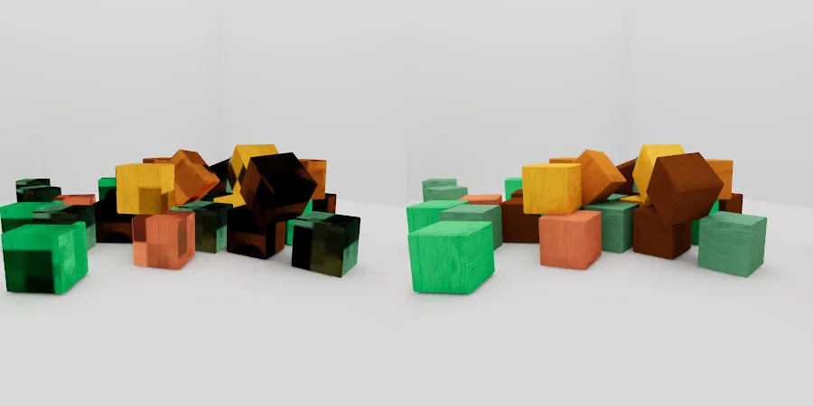
Lightmap UVs have specific requirements distinct from standard texture UVs:
Failure to meet these criteria can result in artifacts after baking the lightmap.
You can resolve these issues by addressing improperly configured lightmap UVs, invalid texels, compression problems, light probe ringing, or denoising and filtering artifacts.
Note: Use the UV Overlap and Baked Lightmap debug draw modes to identify lightmap UV issues.
To resolve lightmap UV problems, follow these steps.
To generate lightmap UVs, refer to Generate lightmap UVs.
To optimize generated lightmap UVs, in Lightmap UVs Settings, set Pack Margin to Calculate. If your lightmap fulfills the Min Lightmap Resolution and your object fulfills the Min Object Scale, Unity ensures there’s no bleeding between charts by conservatively calculating a pack margin large enough to prevent leaks.
Note: Large margins can cause low-texture packing.
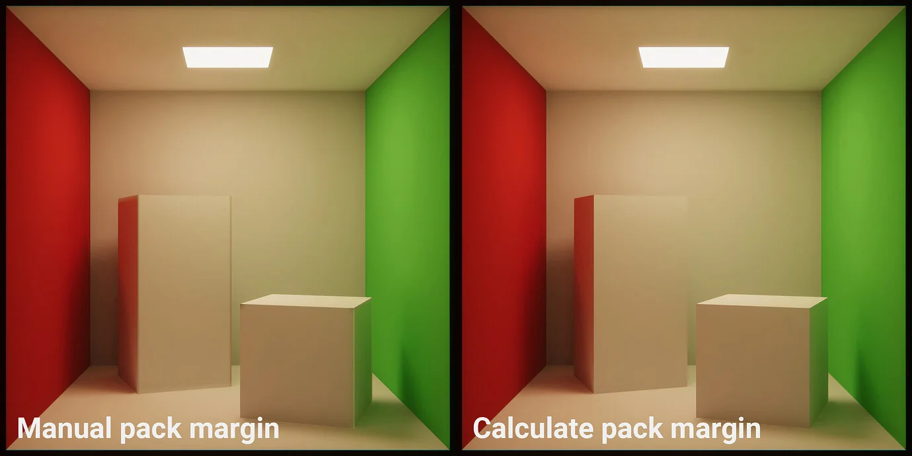
For complex models, manually authoring lightmap UVs in a digital content creation (DCC) program may yield better results. Ensure the UVs are placed in the second (UV1) channel.
Use the lowest resolution that resolves the artifacts to minimize memory usage and bake times.
Fix blocky artifacts in baked lightmaps and red-highlighted texels in the Texel Validity scene view mode.
When baking a lightmap or optimizing a scene in the Editor’s Lighting or Scene view, invalid texels in lightmaps can cause blocky artifacts.
Scenes with invalid texels may display:
Blocky artifacts in baked lightmaps.
Red-highlighted texels in the Texel Validity scene view mode.
Example: One-sided curtain mesh causing invalid texel artifacts after baking (left). The Texel Validity scene view mode highlights these invalid texels in red (right), particularly around the curtain area.
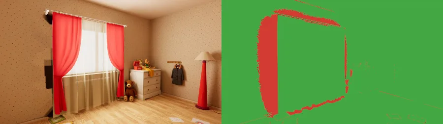
Invalid texels occur when:
Texels fail to receive light from direct, indirect, or environment sources.
Rays originating from texels intersect back-facing surfaces.
Filtering and denoising can spread invalid texels to neighboring areas. Resolving them early minimizes reliance on post-processing.
Note: Use the Texel Validity scene view draw mode for effective debugging.
Ensure visible polygons have outward-facing normals to avoid shading errors.
Vertex normal direction determines which side of the polygon appears as the front (visible) side. Flipping the direction of the normal renders the face invisible unless you are using double-sided shaders. Always ensure that the polygons, that you want to be visible, have their normals pointing outwards.
Example: Proper shading with outward-facing normals on the center cube. Blue polygons in the cube on the left and orange polygons in the cube on the right are flipped. Cubes on the left and right both exhibit invalid texel artifacts after baking, whereas the one in the center doesn’t.
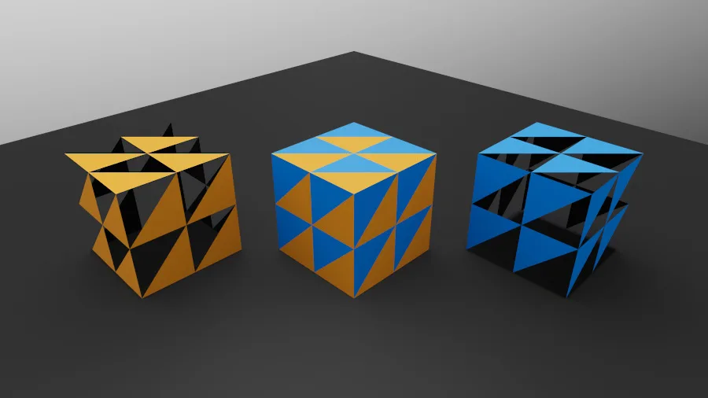
Most 3D modeling applications generate correct normals automatically.
To manually adjust normals, refer to your 3D modeling package documentation.
To reduce the likelihood of invalid texels with watertight meshes, follow these steps:
Cap open faces.
Weld overlapping vertices.
Avoid using line or point geometry.
Limit floating geometry to necessary cases.
Tools like xView in 3ds Max can help identify mesh issues.
For thin, one-sided meshes like curtains or foliage, enable Double-Sided Global Illumination.
Example: Enabling double-sided GI resolves invalid texels and enhances light bounce for one-sided meshes. The Texel Validity scene view no longer shows any invalid texels in red around the curtains (right). Notice that not only the artifacts are gone, but the light also bounces off curtains.
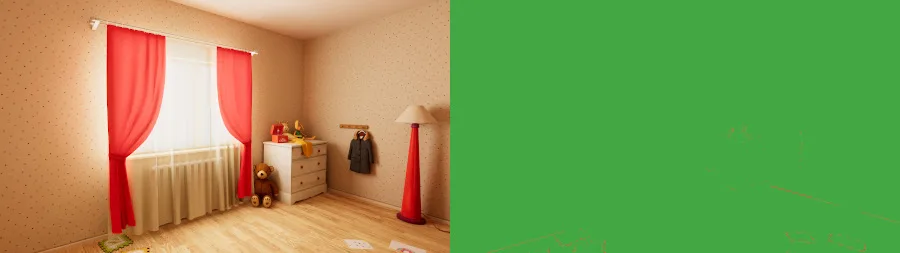
To enable Double-Sided Global Illumination, follow these steps:
For the Built-in Render Pipeline, enable the Double-Sided Global Illumination checkbox in the Material Inspector.
This step also applies to custom ShaderGraph materials.
For the Universal Render Pipeline (URP), set the Render Face dropdown to Both. You can find this property under the Surface category in the Lit Shader.
For the High Definition Render Pipeline (HDRP), navigate to the Surface category in the Lit Shader and configure the following properties:
You can also control the double-sided GI property via the kDoubleSidedEnable API.
Example: Double-Sided Global Illumination disabled (left) and enabled (right). Notice dark artifacts where the meshes intersect in the image on the right. In such cases, disable Double-Sided Global Illumination to achieve correct output.
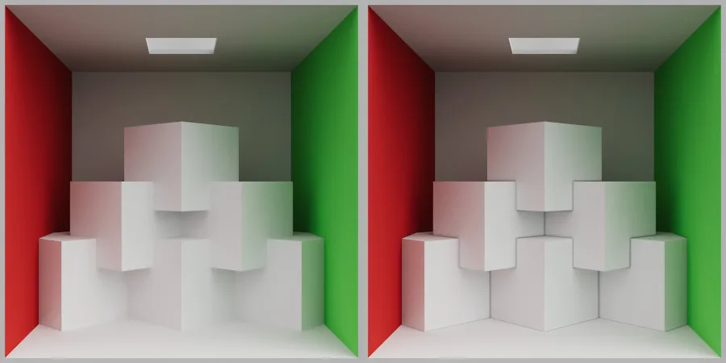
Lightmapper marks texels as invalid when they receive no illumination or intersect backfaces. This allows the dilation filter to push lighting data from valid surrounding texels into partially covered texels. Doing so helps to remove dark artifacts at geometry junctions.
Enabling double-sided GI by default for all materials would result in a darkening effect where meshes intersect or overlap.
To configure the Backface Tolerance property, follow these steps:
Create a new Lightmap Parameters asset.
Navigate to the Lightmapping section in the Mesh RendererA mesh component that takes the geometry from the Mesh Filter and renders it at the position defined by the object’s Transform component. More info
See in Glossary component.
Assign the Lightmap Parameters asset to the Mesh Renderer component.
The Backface Tolerance property controls the percentage of rays that must hit front-facing geometry to consider a texel valid:
Increasing the value increases the likelihood that the lightmapper marks a texel as invalid when it encounters backfaces.
Lowering this value reduces the number of invalidated texels.
Note: Low Backface Tolerance values may result in a loss of occlusion and/or bounce lighting, potentially altering the appearance of the scene.
Limitations imposed by the 32-bit floating-point precision format can be the cause of invalid texels when placing lightmapped meshes far away from the world origin (0,0,0), or if they have a massive scale. This issue is not limited to lightmapped meshes; objects and animations lose precision the farther away they are from world origin.
To solve precision issues, follow these steps:
Move meshes closer to the (0, 0, 0) origin.
Adjust the Push Off value in the Lightmap Parameters asset.
Fix smears, smudges, or ringing around edges and black lightmaps or excessive noise.
When configuring denoising settings to bake a lightmap in the Editor’s Lighting or Scene view, machine learning denoisers may introduce artifacts.
Denoising artifacts may include:
Example: Severe artifacts with low sample counts (left), while higher sample counts produce cleaner results (right). Denoising Artifacts with Open Image Denoiser enabled. Severe artifacts are visible when all sample counts are set to 32 with the Open Image Denoiser enabled (left). The image is cleaner with all sample counts set to 2K and the Open Image Denoiser enabled (right).
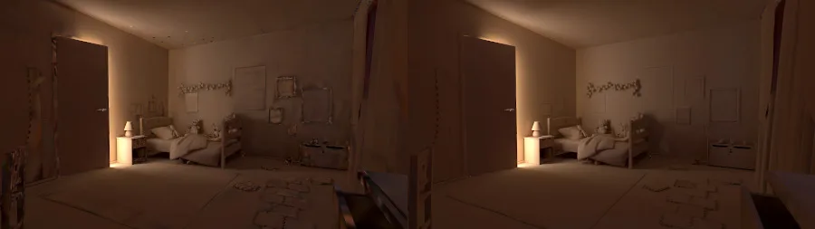
Denoising artifacts typically occur in the following scenarios:
Indirect noise often contributes significantly to poor results.
Most denoisers perform effectively with at least 256 samples. You can improve denoising performance by increasing the sample count.
To select a specific denoiser based on the scene’s characteristics, follow these steps:
Set Filtering to Advanced.
Refer to Progressive GPU.
Specify the desired denoiser for direct, indirect, and ambient occlusion buffers.
To use Gaussian or A-Trous filters, follow these steps:
Set Filtering to Advanced.
Refer to Progressive GPU.
Choose the desired filter type.
You can combine these filters with machine learning denoisers for enhanced results.
Fix speckled noise (fireflies) caused by a bright light source placed close to scene geometry.
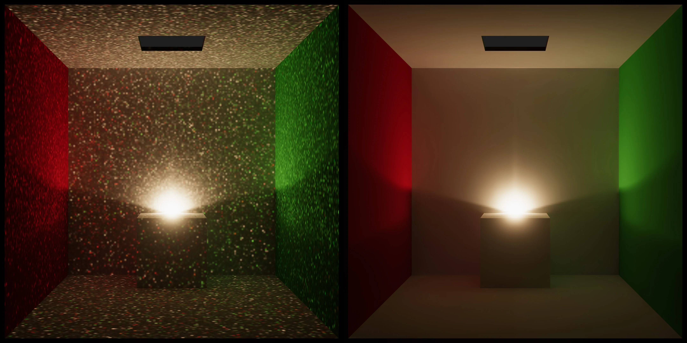
Example: Speckled noise (fireflies) visible (left). After baking with 16K indirect samples and enabling Open Image Denoiser to remove the noise (right).Speckled noise (fireflies) can be visible in brightly lit small areas.
Small, high luminosity areas in the lightmap cause speckled noise to appear. Such areas can be missed when spawning rays from texels. When rays intersect those high intensity areas, they skew the average luminosity estimate. This results in speckled noise which are often referred to as “fireflies”.
Note: The splat clamping feature is being developed to addressing this issue for punctual lights. Refer to the following solutions to resolve issues for now.
This is a brute force method. To achieve acceptable results, use 4K or higher indirect sample in conjunction with filtering and denoising.
To reduce noise in scenes with high frequency HDRIs:
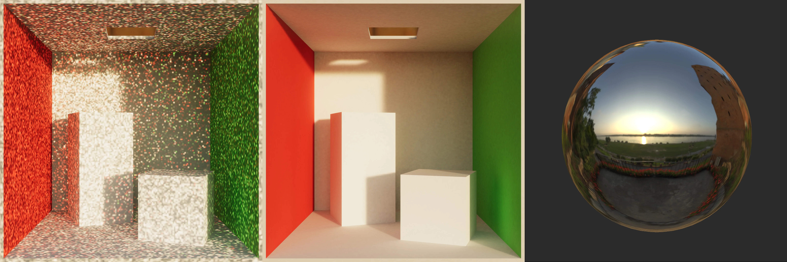
Example: Fireflies caused by the high frequency HDRI (left). The same scene after enabling the Importance Sampling toggle (center). High frequency cubemap used to illuminate the scene (right).
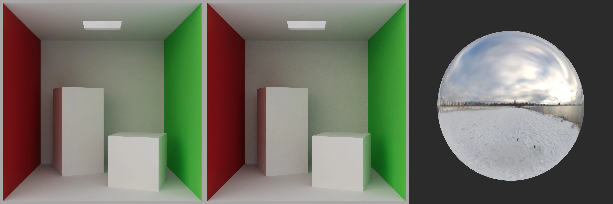
Example: Enabling Importance Sampling can introduce noise when using low frequency HDRIs. Importance Sampling disabled (left). Importance Sampling enabled (center). Low frequency cubemaps used to illuminate the scene (right).Enable importance sampling if:
Disable importance sampling if:
Warning: Enabling importance sampling when using low frequency HDRIs can result in increased noise levels instead.
To remove the noise, enable ML denoisers in conjunction with filtering. To get clean results, use high sample counts.
To reduce issues when using emissive materials, reduce the number of small baked emissive objects by: 1. Set the Global Illumination property of the GameObject to None in the Material Inspector.
The object will keep its self-illuminating appearance, but it won’t contribute to global illumination. Reducing the number of small baked emissive objects can help reduce noise.
URP and HDRP use inverse square falloff for lights by default. In the Built-in render pipeline, you can achieve the same effect by using custom falloff scripts. The unfortunate side effect being that such lights might lead to increased noise levels when placed very close to static geometry. Ensure that there is enough distance between the static geometry and the lights in the scene.
Fix Gaussian light leaks, blurs, and splotches, A-Trous speckles, and HDR denoise failures.
When baking a lightmap in the Editor’s Lighting or Scene view, using a Gaussian or an A-Trous filter to reduce noise can create artifacts.
Filtering artifacts depend on the filter type:
Example: Scene filtered using Gaussian filter at a 1 texel radius. With all samples set to 32, the final lightmap exhibits splotches (left). Baking with all samples set to 2K and with Gaussian filtering enabled yields better results (right).
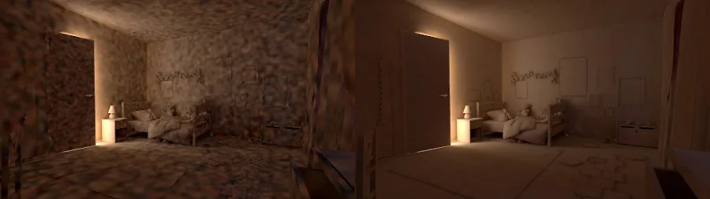
Example: Scene filtered using A-Trous filter. With all samples set to 32, A-Trous edge preservation algorithm cannot distinguish between noise and edges, and thus completely fails (left). After increasing all samples to 2K, A-Trous filter yields decent results, with less blurring when compared to Gaussian (right).
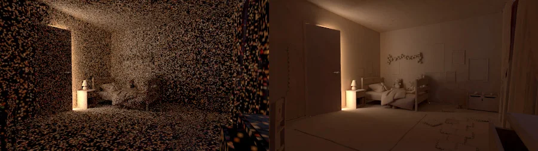
Filtering artifacts causes depend on the filter type:
Gaussian Filter:
A-Trous Filter:
You can reduce artifacts such as splotches or speckles by increasing sample counts.
Machine learning denoisers effectively remove noise with fewer biases compared to traditional filters. Combining them with filters can enhance results:
To adjust the filtering strength, adjust the filter’s radius and sigma. If your scene has lightmap leaking artifacts or blurring, reduce the Gaussian** filter’s radius value. This reduces the amount of bilateral blurring and prevents texel smearing.
Refer to Progressive GPU.
Fix color banding and blocky artifacts.
When optimizing lightmaps for mobile performance during lightmap baking or asset compression in the Editor’s Lighting or Inspector windows, artifacts can occur.
Color banding and blocky artifacts.
Example: Banding artifacts introduced by low-quality compression on Android platform (left). You can fix banding artifacts by using high-quality compression (right).
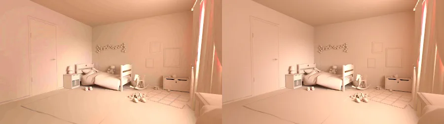
Color banding and blocky artifacts are often associated with low-quality texture compression. Unity attempts to select automatically the best compression format for the target platform. Due to compatibility concerns, texture formats intended for mobile platforms are often more affected by compression artifacts.
To adjust lightmap encoding, follow these steps:
Open Edit > Project Settings > Player > Other Settings.
Modify the Lightmap Encoding setting for each target platform.
To configure HDR cubemap encoding for reflective objects with compression artifacts, follow these steps:
Open Edit > Project Settings > Player > Other Settings.
Modify the HDR Cubemap Encoding setting.
Note: The HDR Cubemap Encoding setting is available in Unity 2022.1 and later.
To control compression quality, follow these steps:
Go to Window > Rendering > Lighting.
In the Lighting window, locate the Lightmaps tab.
Find the Lightmap Compression dropdown under the Lightmaps settings section.
Select a compression quality.
Higher quality presets result in fewer compression artifacts post-bake.
To manually override texture formats, follow these steps:
Locate the lightmap textures in the Project window.
Select a lightmap texture.
In the Inspector window, enable the Override checkbox for the desired platform.
Select the desired compression format.
Click Apply.
Note: Custom overrides reset after rebaking lighting. Repeat these steps after each bake.
Fix unnatural probe lighting and visible rippling artifacts.
When setting up light probes or baking lightmaps in the Editor’s Lighting or Scene view, ringing artifacts in light probes can cause incorrect shading.
Objects lit by light probes exhibit unnatural lighting.
Visible rippling or artifacts around light probes.
Example: Remove Ringing disabled (left) and enabled (right). Notice how negative light probe values result in wrong shading for the statue on the left. You can fix this issue by enabling the Remove ringing option, but as a result, the final output can appear very smooth.
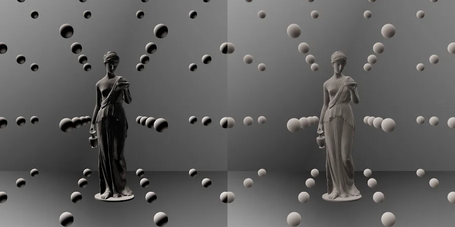
For performance reasons, Unity encodes light probes using Spherical Harmonics. However, this lossy compression technique can’t faithfully represent environments where lighting changes quickly across the sphere of directions. In cases such as light entering through a small hole in a cave roof, Spherical Harmonics can yield brighter or dimmer illumination than expected. This is called overshooting, or ringing. For more information, refer to Gibbs phenomenon.
Note: To make debugging easier, enable Gizmos in the sceneA Scene contains the environments and menus of your game. Think of each unique Scene file as a unique level. In each Scene, you place your environments, obstacles, and decorations, essentially designing and building your game in pieces. More info
See in Glossary viewport and adjust the Light Probe Visualization property in the workflow settings.
To remove light probe ringing, follow these steps:
Select the Light Probe Group component.
Enable the Remove Ringing property.
Note: This option reduces contrast in probe-lit objects. Disable it if your scene does not exhibit ringing artifacts.
To mitigate ringing artifacts caused by high-intensity direct lighting, follow these steps:
Lower the Intensity value in the Light component.
Use mixed lightsLight components whose Mode property is set to Mixed. Some calculations for Mixed Lights are performed in advance, and some calculations for Mixed Lights are performed at runtime. The behavior of all Mixed Lights in a Scene is determined by the Scene’s Lighting Mode. More info
See in Glossary to balance real-time direct lighting and baked indirect lighting.
Smooth hard edges and lighting discontinuities at seams and chart boundaries.
When using baked lightmaps with the Progressive Lightmapper, you may notice:
Hard edges appearing along seams between separate mesh faces.
Visible discontinuities in lighting at chart boundaries in the lightmap.
When Unity bakes lightmaps, it treats mesh faces that are close together but separate as distinct in lightmap space, creating edges known as seams.
Ideally, seams are invisible, but they can sometimes appear with hard edges. This happens because the GPU cannot blend texel values between separated charts in the lightmap, treating them as distinct entities and causing visible discontinuities.
Seam stitching smooths hard edges on GameObjects rendered with baked lightmaps from the Progressive Lightmapper. When enabled, Unity performs additional calculations to improve the appearance of seams in the lightmap. While stitching isn’t perfect, it often significantly enhances the final result. However, this feature increases baking time, so it is disabled by default.
When active, the lightmapper identifies pairs of edges to stitch and smooths the illumination across seams. This applies only to straight edges that run horizontally or vertically along chart boundaries in the atlas and works with axis-aligned rectangles in UV space.
Note:
To smooth hard edges:
Select a GameObject with a Mesh Renderer component in the scene.
In the Mesh Renderer Inspector, in the Lightmapping section, enable Stitch Seams.
Alternatively, use the MeshRenderer.stitchLightmapSeams API to programmatically enable seam stitching.
Example: A Scene with seam stitching.
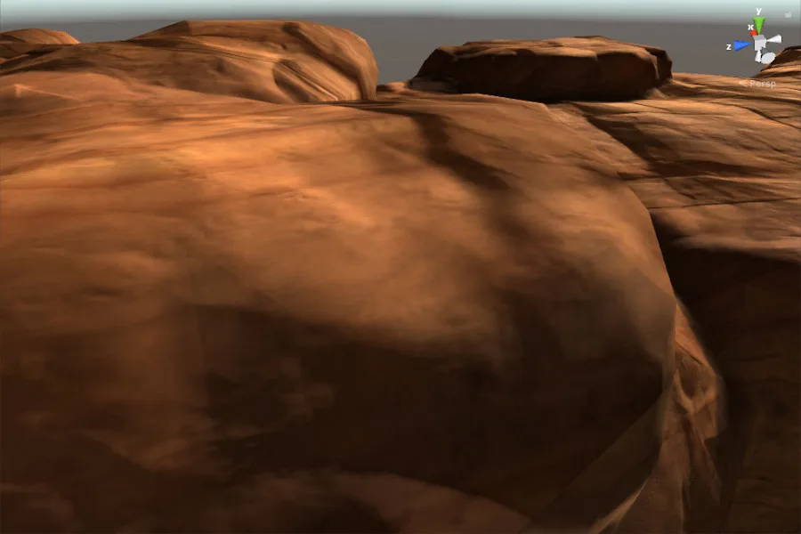
Fix lightmap aliasing, UV overlaps, and red highlight warnings.
Light bleeding typically manifests as:
Example: Red pixels indicate overlapping chart neighbourhoods.
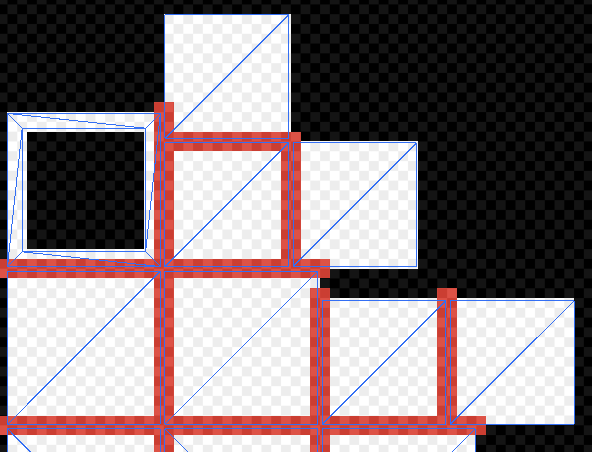
Light bleeding occurs when data from one lightmap chart spills onto another due to insufficient spacing between charts, leading to graphical artifacts such as aliasing or pixelation.
Each lightmap comprises multiple charts, which Unity maps to mesh faces at runtime. These charts store lighting data used to calculate the final appearance. During rendering, the GPU samples lighting data by interpolating the values of the four nearest texels, known as the bilinear neighborhood. When charts are placed too closely, their neighborhoods overlap, causing light bleeding. Factors influencing this issue include lightmap resolution, mesh UVs, and Importer settings. Unity provides tools to detect and address these problems.
Example: Graphical artifacts due to chart bleeding.
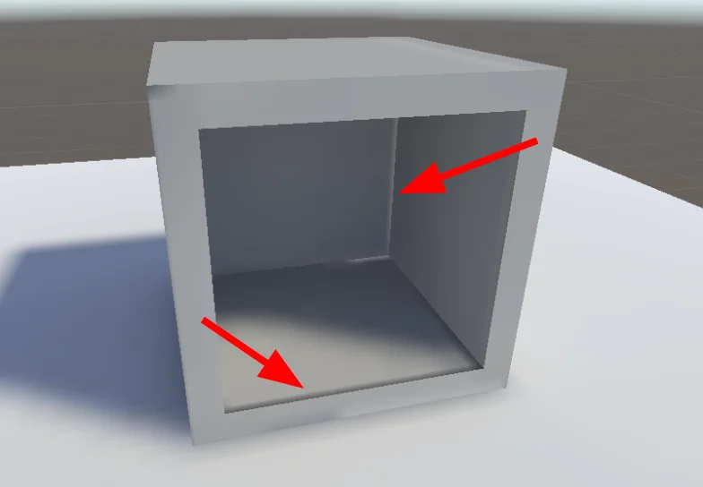
Light bleeding is caused by overlapping chart neighborhoods in the lightmap. This occurs when there is insufficient spacing between charts, often due to:
To resolve light bleeding, follow these steps.
If providing UVs manually, increase the margins using your 3D modeling software.
For Unity-generated UVs, go to the Model Import Settings and:
Refer to the Generating lightmapping UVs documentation for more details.
To increase resolution globally, adjust the Lightmapper Settings in the Lighting tab.
To increase resolution for a specific GameObject, modify its Lightmap Settings in the Mesh Renderer component.
Enable the UV Overlap draw mode in the Scene View to highlight problematic texels.
Example: Scene View using UV Overlap draw mode (see dropdown in top left).
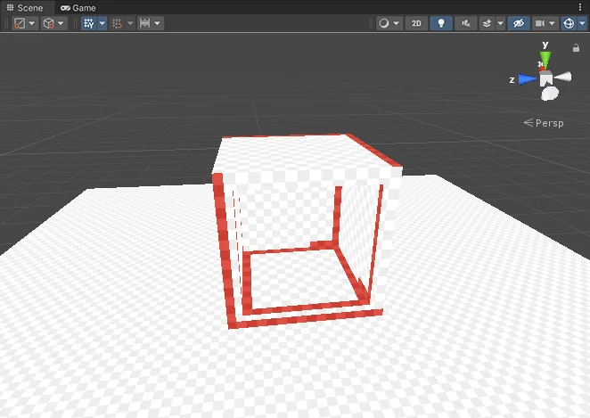
Use the Baked Lightmaps Preview to view and diagnose UV overlaps in the Lighting window.
Example: The Baked Lightmaps Preview in the Lighting window’s Baked Lightmaps tab.
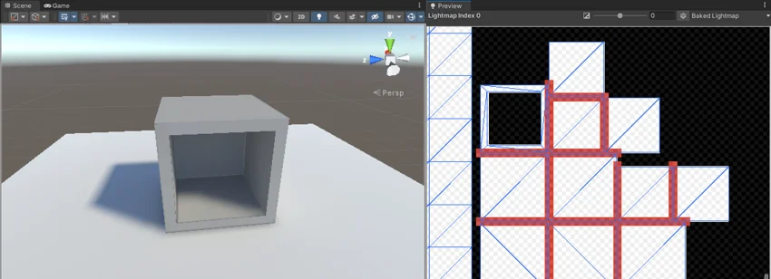
By implementing these solutions, you can minimize or eliminate light bleeding artifacts.
Example: Same mesh as before, but without bleeding artifacts.
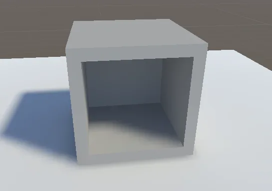